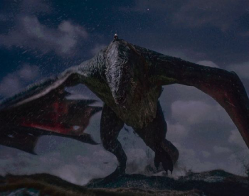

-
Caraxes
História
Caraxes, também chamado de Wyrm de Sangue e Verme Sangrento,foi o dragão montado pelo Príncipe Aemon Targaryen durante o reinado do Rei Jaehaerys I Targaryen e, mais tarde, pelo Príncipe Daemon Targaryen durante a Dança dos Dragões.
Ele era vermelho, imenso e magro. Em batalha era formidável, temível e experiente. Durante a Dança, Caraxes tinha metade do tamanho de Vhagar. Famoso por sua ferocidade, ele era esguio e de cor vermelho-sangue.Com o passar dos anos, ele se tornou cada vez mais formidável e experiente. Para continuar lendo sobre Caraxes clique aqui -
Balerion
História
Quem foi Balerion ? O dragão lendário que aparece em “House of the Dragon”
O dragão mais poderoso que já voou sobre Westeros foi vital para a soberania dos Targaryen. Balerion, chamado de Terror Negro, foi um dragão da Casa Targaryen. Ele foi montado pelo Rei Aegon I Targaryen durante a Guerra da Conquista, ao lado de suas irmãs-esposas Visenya, montada em Vhagar, e Rhaenys, montada em Meraxes.
Para continuar lendo sobre Balerion clique aqui -
Maelys
História
Meleys, chamada Rainha Vermelha, foi uma velha dragão-fêmea montada pela Princesa Alyssa Targaryen durante o Reinado do Rei Jaehaerys I Targaryen e, mais tarde, pela Princesa Rhaenys Targaryen.
Suas escamas eram escarlates, e as membranas de suas asas eram cor-de-rosa. Sua crista, chifres e garras eram brilhantes como cobre. Ela ficou preguiçosa, mas era temível quando despertada. Meleys era velha, esperta e não estranhava batalha.
Como os dragões nunca param de crescer à medida que envelhecem, Meleys foi aparentemente uma das maiores e mais antigas dragões durante a Dança dos Dragões. Vhagar, último dos três dragões Targaryen originais, facilmente dominava Arrax,um dragão juvenil que recentemente crescera o suficiente para carregar um cavaleiro. Até Caraxes enfrentou uma dura luta contra Vhagar. Em contraponto, acreditava-se que em uma luta de um para um, Vhagar teria dificuldade em lutar contra Meleys. Para continuar lendo sobre Maelys clique aqui -
Sunfyre
História
Sunfyre,também conhecido como Sunfyre, o Dourado, foi um dragão e a montaria do Rei Aegon II Targaryen.
De acordo com Arquimeistre Gyldayn, Sunfyre era o dragão mais belo já visto na Terra. Sunfyre tinha douradas escamas brilhantes como ouro batido na luz do sol e asas com membranas rosa-claro. Suas chamas eram douradas também. Enorme e pesado, Sunfyre era um lutador formidável e feroz apesar de sua juventude.
O ovo de dragão de Sunfyre chocou em Pedra do Dragão. Embora o ano exato de nascimento de Sunfyre nunca tenha sido declarado, ele foi descrito como sendo um dragão "jovem" em 120 d.C. e 129 d.C..Sabe-se que Sunfyre era mais velho que Tessarion. Embora não seja conhecido com precisão quando exatamente o príncipe Aegon tomou Sunfyre como sua montaria, sabemos que em 120 d.C. Aegon já montava Sunfyre.
Em algum momento desconhecido, Grande Meistre Gerardys foi devorado por Sunfyre. Para continuar lendo sobre Sunfyre clique aqui -
Syrax
História
Syrax foi uma dragão-fêmea. Ela foi montada exclusivamente por Rhaenyra Targaryen. Seu nome veio de uma deusa de Valíria.
Syrax era caracterizada por suas escamas amarelas. Ela era enorme e formidável, mas não tão temível ou experiente em batalha como Caraxes. Foi mantida em correntes e era muito bem alimentada. Syrax já não caçava há anos quando iniciou a guerra civil.
Rhaenyra tomou Syrax como uma montaria pela primeira vez em 104 AC, quando a princesa tinha sete anos de idade. Syrax foi descrita como uma "jovem" dragão-fêmea na época, e a própria Rhaenyra nomeou-a "Syrax" (em homenagem a uma deusa valiriana) - sugerindo fortemente que Syrax não tinha tido cavaleiro anterior. Syrax colocou "várias" ninhadas de ovos durante o reino de Viserys I. Sua última ninhada foi produzida pouco antes da guerra civil. Um dos ovos dessa última ninhada foi dado a Rhaena, a enteada de Rhaenyra.
Para continuar lendo sobre Syrax clique aqui -
Vhagar
História
Vhagar foi uma dragão-fêmea montada por Visenya durante a Conquista, ao lado do Balerion de Aegon o Conquistador e o Meraxes de sua irmã Rhaenys. Outros cavaleiros de dragão de Vhagar foram Lady Laena Velaryon, Príncipe Aemond Targaryen e Príncipe Baelon Targaryen, o Bravo. Vhagar ganhou este nome em homenagem a um dos deuses da Antiga Valíria.
De acordo com Tyrion Lannister, Vhagar era grande o suficiente para colocar um cavalo goela abaixo. Dizem que a respiração de Vhagar era tão quente que podia derreter a armadura de um cavaleiro e cozinhá-lo por dentro.
Seu montador em dança dos dragões é Daemond Targaryen
Para continuar lendo sobre Vhagar clique aqui